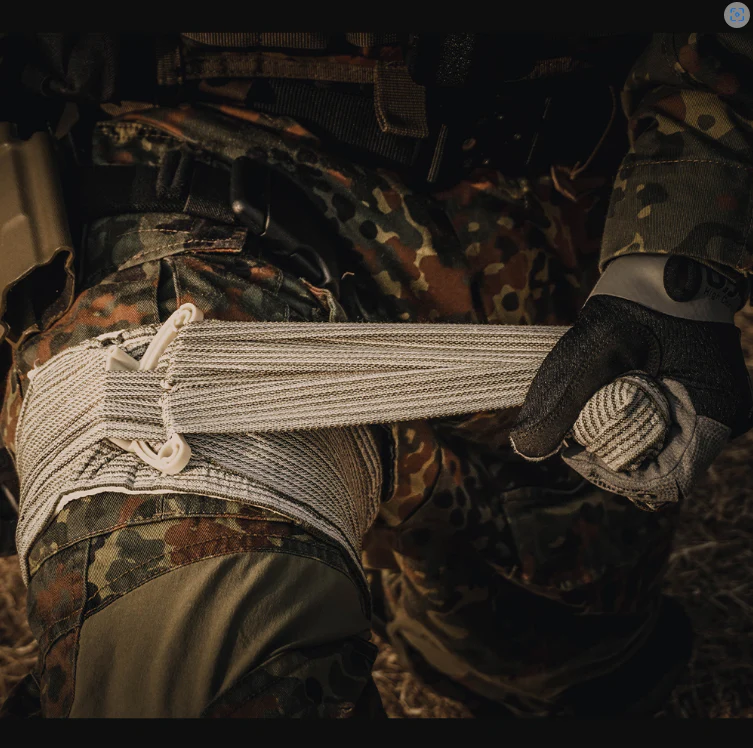
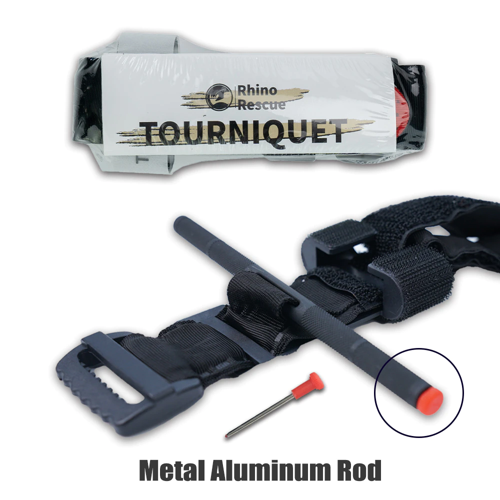
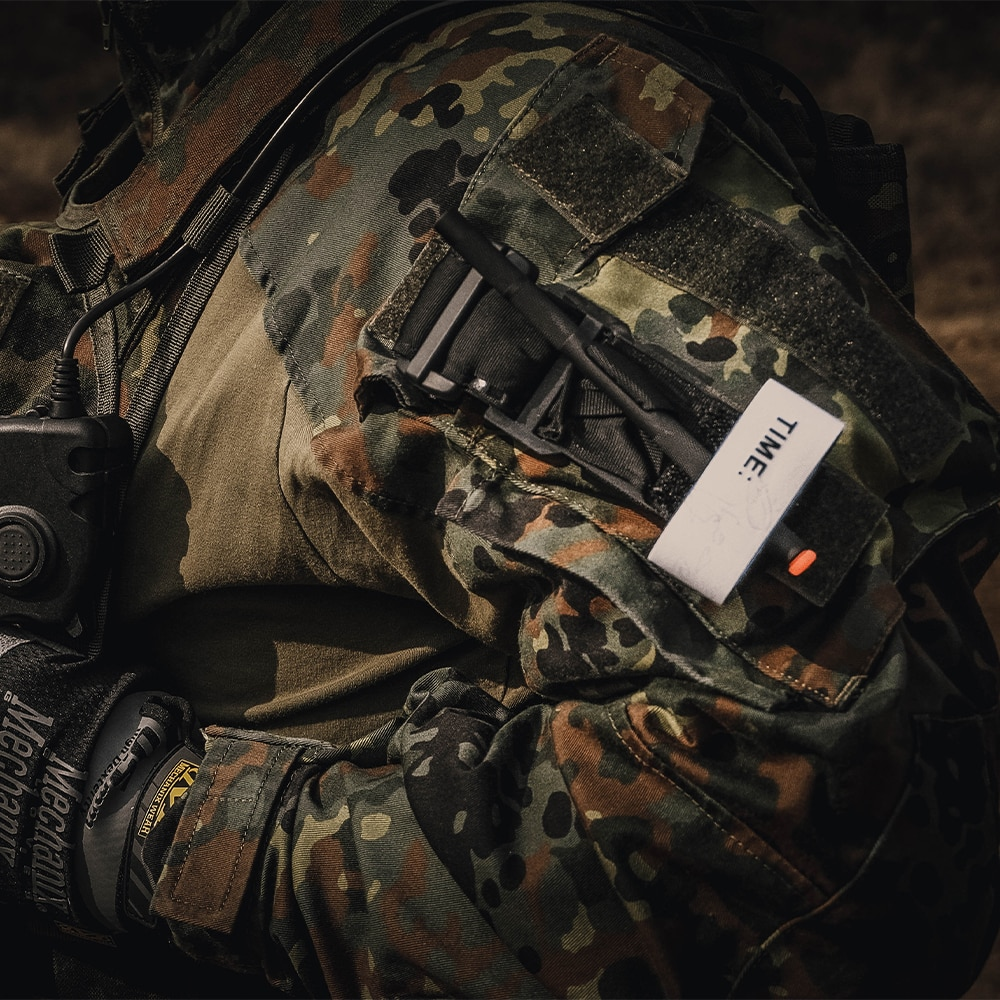
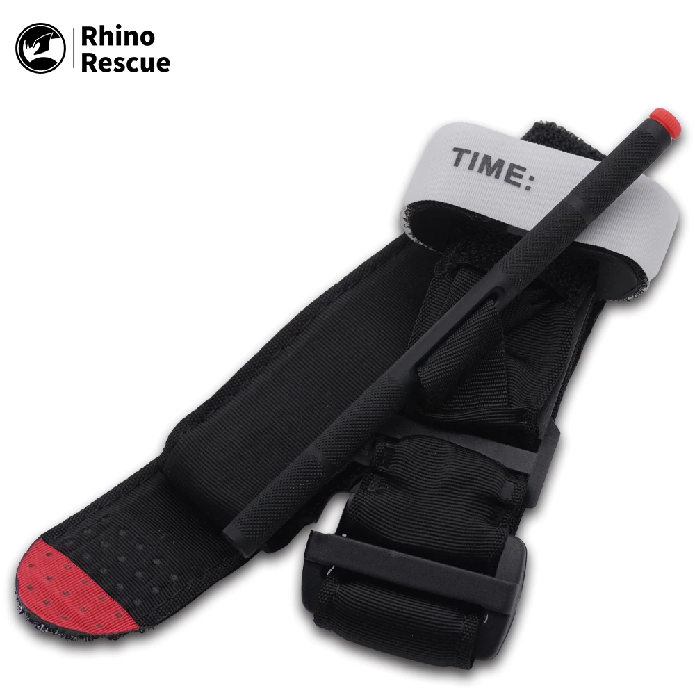
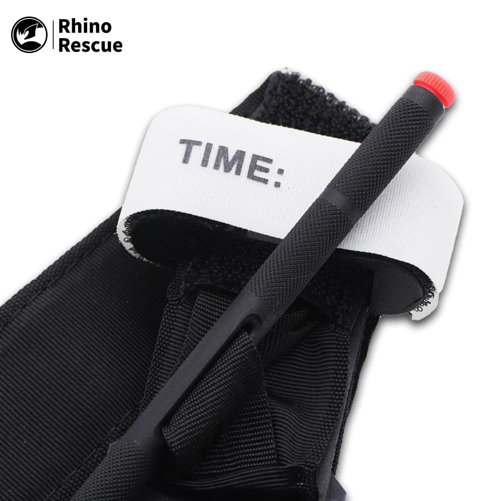
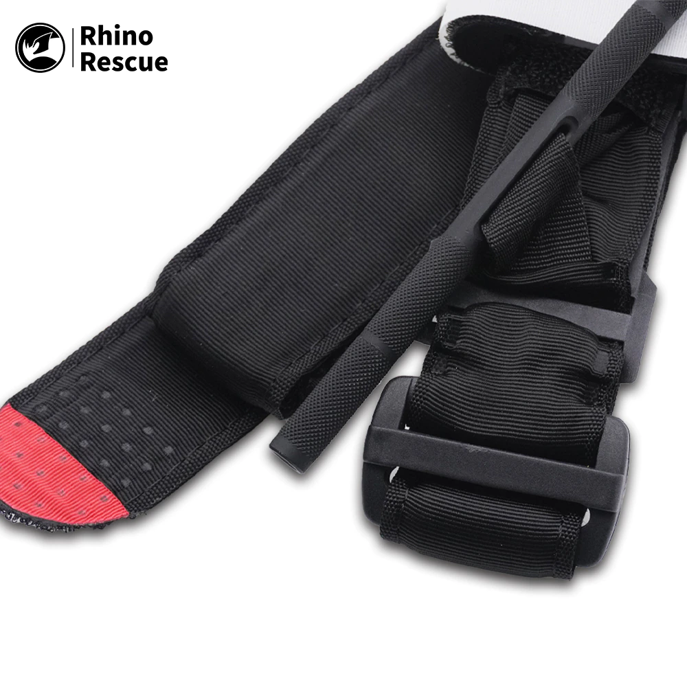
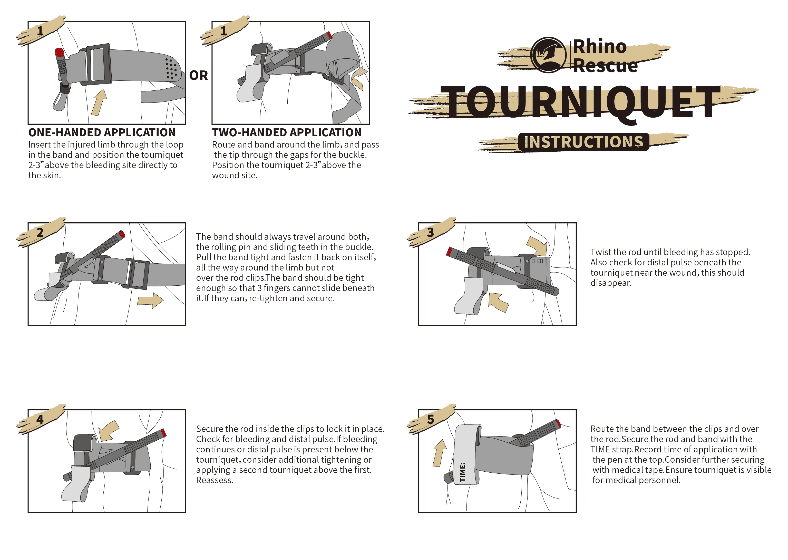

Soldiers are wounded on the battlefield, no matter which kind of trauma, more or less accompanied by blood loss. Healthy adults have 7% to 8% of their total body weight. They are life-threatening once their blood loss exceeds 30% of their total blood loss. Deadly bleeding on the battlefield accounts for about 85 percent of preventable combat deaths, is the first cause of death in combat wounds, and we often call their lives bloody “sacrifice”.
Blood loss is the most urgent threat to the lives of the wounded, so it is a priority in the tactical first aid system.
Tactical first aid follows the principle of “MARCH”, which is the initial disposal of the injured in the order of controlling mass hemorrhage (Mass hemorrhage), open airway (Airway), ensuring respirations (Respirations), blood circulation (Circulation), and handling head injury / hypothermia (Head injury / Hypothermia).
Controlling mass hemorrhage is the first priority. In this link, tying binding the tourniquet as well as bandages, and using tourniquet dressings for the injured is an important life-saving technique that can be adopted. This article will show the rescue disposal methods using a tourniquet.


Rhino tourniquet
Limb trauma is the most common combat trauma in modern warfare, accounting for about 30% of all the combat wounds. At present, the one-handed tourniquet of this serie is usually used in the rescue process under fire.
The structure of the Rhino tourniquet is quite simple. It consists of a Velcro-fixed tourniquet ring with adjustable tourniquet belt ring, handle, and buckle. It should be noted that the tourniquet is only used when the limb is injured, and is tied at the large arm or thigh of the corresponding injured limb, not at the wound. If the left arm is injured, it needs to tie the tourniquet to the near heart end of the left large arm; If the right calf is injured, it needs to tie the tourniquet to the near center end of the right thigh.
The method of tying the tourniquet is also very simple. First, adjusting the tourniquet ring to a slightly larger diameter than the injured limb, convenient to set it in the near-heart end of the limb wound. Then, rotating the handle to tighten the tourniquet ring, and fixing the handle in the “C” shaped buckle. Rhino tourniquet is suitable for the injured with serious limb injury bleeding or limb loss, and it is convenient to operate with one hand, and facilitate the injured to self-rescue. Lastly, tying the tourniquet partition cuff or trouser leg at the wound, without having to deliberately pursue the accuracy of the tourniquet position.



Rhino tourniquet
Rhino tourniquet buckle has a white label with the word “Time”, which is used to record the specific time of the tourniquet tying, and must be accurate to minutes. This is because, although the tourniquet is good, removing the tourniquet may cause serious consequences. Therefore, the user must be accurately recorded in the first time tying tourniquet time point, and tying tourniquet time is usually not more than 2 hours. That is to say, within 2 hours, the wounded must be transferred to the professional institutions with further treatment conditions, then can try to switch to tourniquet dressing and bandage to stop bleeding. It also stipulates that non-military medical personnel are prohibited from releasing the tourniquet as described below: using the tourniquet for more than 6 hours; the casualty is in shock; and limb disconnection.
When the limb is squeezed for a long time, there will be a more serious risk. Although the serious bleeding is effectively controlled and the injured are carefree in a short time, the limbs are squeezed for a long time, which may cause hyperkalemia. At this time, if the tourniquet is hastily removed without any auxiliary measures, the high potassium blood will quickly spread to the important organs, directly endangering the lives of the injured. To eliminate this risk as much as possible, when the casualty is transferred to a hospital, it must first neutralize or prevent the spread of high-potassium blood by liquid resuscitation before removing the tourniquet and performing further treatment for the casualty.
